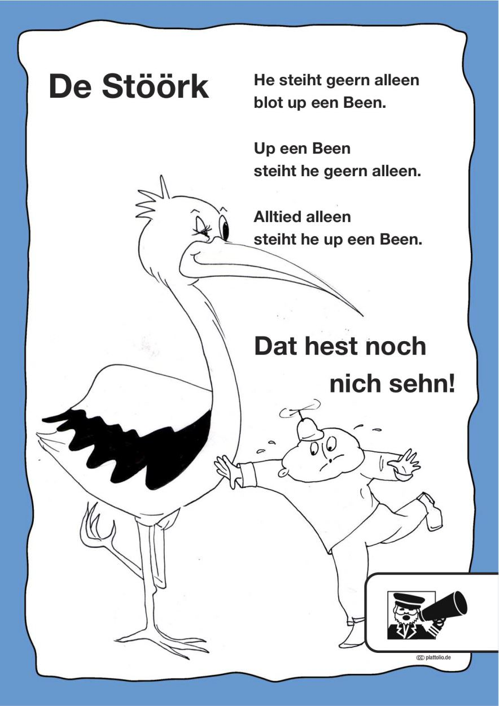

Idee von: Christianne Nölting
Übersetzung von: Cornelia Nath
Illustration von: Nicola Ashtarany
Deine E-Mail-Adresse wird nicht veröffentlicht. Erforderliche Felder sind mit * markiert.
Kommentar
Name *
E-Mail *
Website
düsse Siet is in de Johren kamen un warrt to‘n …. afstellt.
Bi Frogen rund üm Platt mellt Jo ok geern bi dat Lännerzentrum för Nedderdüütsch in Bremen:
Wi grööt vun Harten!


Schreibe einen Kommentar